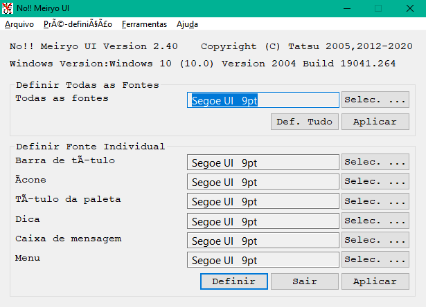
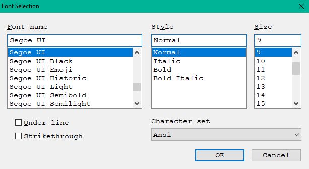

Rode o noMeiryoUI.exe.
Este
ícone ().
E,
abaixo, a janela é exibida.

Pressione
o botão Selec. ...
(Selecionar) para definir o elemento da interface do usuário.
Quando você pressionar o botão Selecionar..., esta janela será exibida.

Escolha o nome, o tamanho e o estilo da fonte, o conjunto de caracteres e pressione o botão OK.
Pressione o botão Configurar e você poderá definir a fonte da interface do usuário.
O formato da
linha de comando está abaixo.
noMeiryoUI [font_setting_file] [-set]
Se você especificar o arquivo de configuração da fonte, ele será carregado quando este programa for iniciado.
Se você escolher a opção -configurar, as fontes do sistema serão configuradas automaticamente.